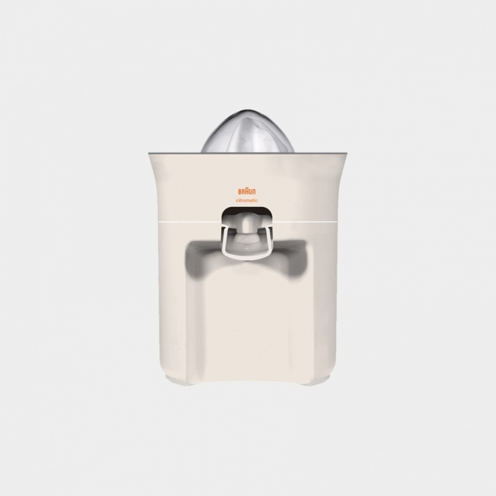
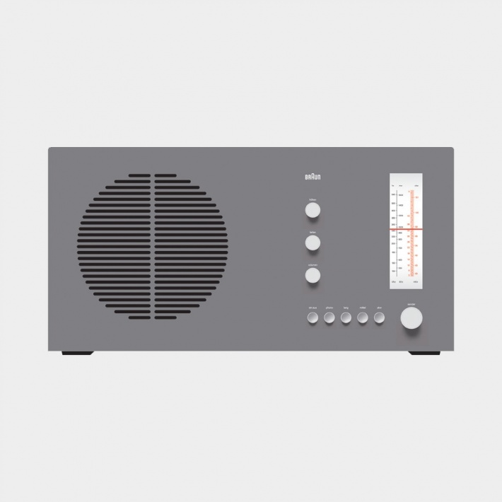

1. Good design is innovative
The possibilities for innovation are not, by any
means, exhausted. Technological development is
always offering new opportunities for innovative design. But innovative design always develops
in tandem with innovative technology, and can never
be an end in itself.
means, exhausted. Technological development is
always offering new opportunities for innovative design. But innovative design always develops
in tandem with innovative technology, and can never
be an end in itself.
Image: TP 1 radio/phono combination, 1959, by Dieter Rams for Braun

2. Good design makes a product useful
A product is bought to be used.
It has to satisfy certain criteria,
not only functional, but also psychological and aesthetic.
Good design emphasizes
the usefulness of a product whilst disregarding anything that could possibly detract from it.
the usefulness of a product whilst disregarding anything that could possibly detract from it.
Image: MPZ 21 multipress citrus juicer, 1972, by Dieter Rams and Jürgen Greubel for Braun

3. Good design is aesthetic
The aesthetic quality of a product is integral to
its usefulness because products we use every day
affect our person and our well-being. But only
well-executed objects can be beautiful.
its usefulness because products we use every day
affect our person and our well-being. But only
well-executed objects can be beautiful.
Image: RT 20 tischsuper radio, 1961, by Dieter Rams for Braun

4. Good design makes a product understandable
It clarifies the product’s structure.
Better still, it can make the product talk.
At best, it is self-explanatory.
Image: T 1000 world receiver, 1963, by Dieter Rams for Braun

5. Good design is unobtrusive
Products fulfilling a purpose are like tools. They
are neither decorative objects nor works of art.
Their design should therefore be both neutral and
restrained, to leave room for the user’s self-expression.
are neither decorative objects nor works of art.
Their design should therefore be both neutral and
restrained, to leave room for the user’s self-expression.
Image: Cylindric T 2 lighter, 1968, by Dieter Rams for Braun